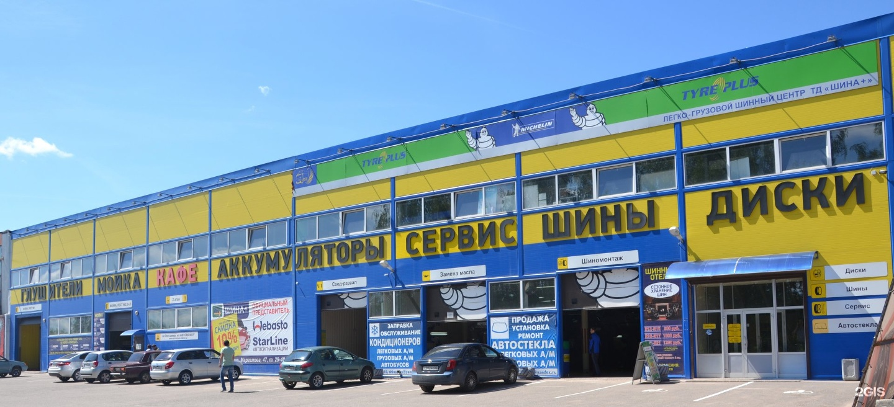
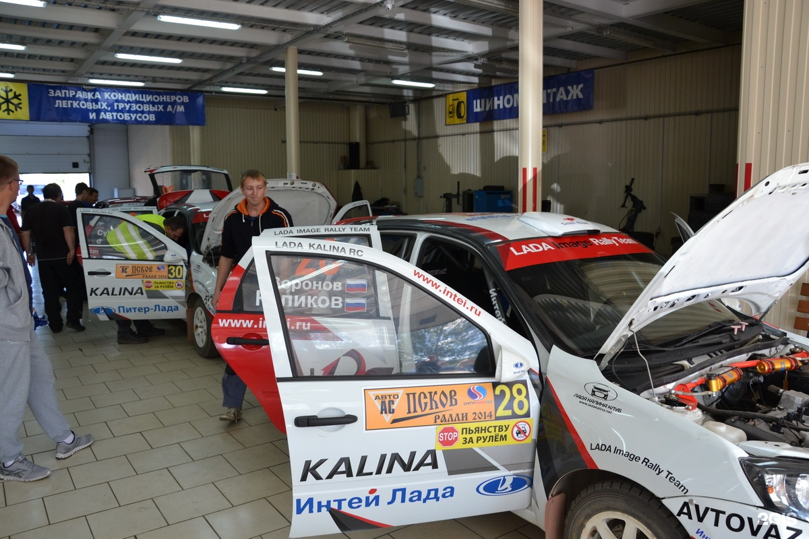
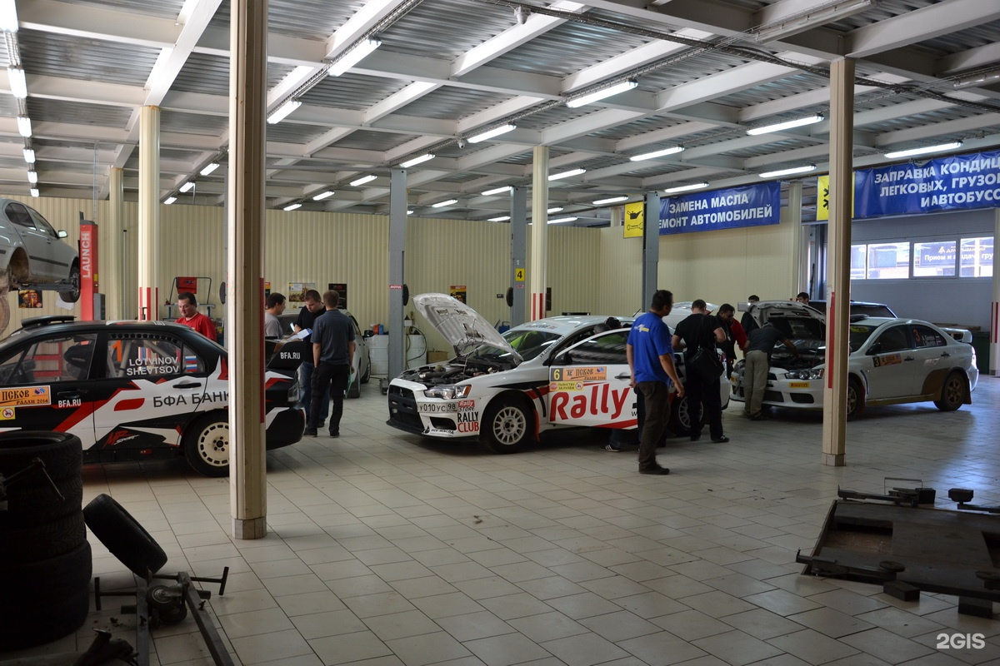
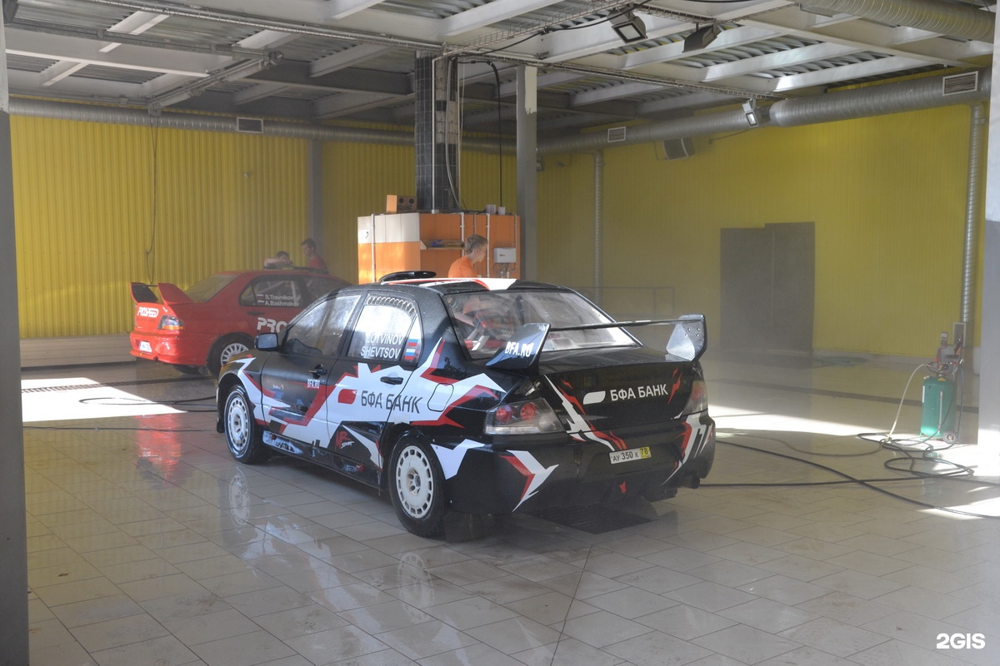

автотехцентр · Завеличье
Шина плюс
Шиномонтаж и работы с дисками
Здесь меняют шины, ремонтируют порезы, правят диски и занимаются ходовой. По телефону можно уточнить нужные работы.
Часы работы
Пн–Вс 09:00–20:00

Услуги
С чем можно обратиться
- 01
Шиномонтаж
Также можно обратиться за ремонтом порезов и ошиповкой шин.
- 02
Ремонт ходовой части автомобиля
- 03
Замена масла
- 04
Ремонт порезов
- 05
Правка / Прокатка дисков
- 06
Ошиповка шин
Уточните работы с шинами и дисками
ПозвонитьЦены
Услуги и шины
Прайс проверен 29.10.2026. Актуальную стоимость уточняйте по телефону.
Прайс в 2ГИСШиномонтаж и развал
Все 72 позиции
Легковой автомобиль и «Нива»
80.00 руб.
Микроавтобус, УАЗ, джип, кроссовер
110.00 руб.
Газель
150.00 руб.
Перестановка колеса (доп к цене снятия)
70.00 руб.
225/75R16C, 235/65R16C, R17C и более
200.00 руб.
Снятие спарки футорного крепления
500.00 руб.
Все размеры
90.00 руб.
12'', 13'', 14''- легковая
60.00 руб.
15'', 16'' легковая, Нива(штатный размер)
90.00 руб.
Джип, кроссовер («205, 215....»/«15'',16''»)13''С, 14''С
110.00 руб.
15''С, 16''С, 17''С, 17''-все, 18''- легковая, колесо с датчиком
160.00 руб.
Легковая 19'', 20''..., (215...245/ 18'', 19'') джип, кроссовер
240.00 руб.
RunFlat, SSR, ZP. (255.../18'', 19''...) джип, кроссовер, 225/75R16C, 235/65R16C и более
260.00 руб.
12'', 13'', 14''- легковая
60.00 руб.
15'', 16'' легковая, Нива(штатный размер)
90.00 руб.
Джип, кроссовер («205, 215....»/«15'',16''»)13''С, 14''С
110.00 руб.
15''C, 16''С, 17''C, 17''-все, 18''-легковая, колесо с датчиком
160.00 руб.
Легковая-19'', 20''...., (215...245/ 18'', 19'') джип,кроссовер
240.00 руб.
RunFlat, SSR, ZP. (255.../18'', 19''...) джип, кроссовер, 225/75R16C, 235/65R16C и более
260.00 руб.
12'', 13'', 14''- легковая
60.00 руб.
15'', 16'' легковая, Нива(штатный размер)
90.00 руб.
Джип, кроссовер («205,215....»/«15'',16''»)13''С, 14''С
110.00 руб.
15''C, 16''С, 17''С, 17''-все, 18''-легковая, колесо с датчиком
160.00 руб.
Легковая-19'', 20''...., (215...245/ 18'', 19'') джип, кроссовер
240.00 руб.
RunFlat, SSR, ZP. (255.../18'', 19''...) джип, кроссовер, 225/75R16C, 235/65R16C и более
260.00 руб.
Проверка дисбаланса колеса
80.00 руб.
Прокол, порез до 1см.
300.00 руб.
Порез более 1см.
400.00 руб.
Проверка герметичности камеры
80.00 руб.
Установка жгута
300.00 руб.
Прокол (бескордовая латка)
300.00 руб.
Установка кордовой латки R 8,10,11,12
500.00 руб.
Установка кордовой латки R 13,14,19
800.00 руб.
Установка кордовой латки R 20-33
1200.00 руб.
Проверка герметичности бескамерного колеса
120.00 руб.
Установка стандартного грузика (5-100гр.)
80.00 руб.
Установка грузика на липкой основе (60гр.)
80.00 руб.
Установка, замена резинового вентиля
90.00 руб.
Установка, замена датчика давления
100.00 руб.
Подкачка грузового и спаренного колеса
80.00 руб.
Подкачка легкового колеса
30.00 руб.
Удаление старого скотча от липкого грузика с литого диска роликом
120.00 руб.
Обработка б/к колеса герметиком с очисткой диска
80.00 руб.
Зачистка ступицы колеса от грязи и ржавчины (1 шт.)
100.00 руб.
Смазка шпилек и болтов крепления колеса (1 колеса)
50.00 руб.
Утилизация колеса, диска
400.00 руб.
Сварка литого диска за 1 см
400.00 руб.
Вулканизация покрышки
1200.00 руб.
Вулканизация покрышки с применением починочного корда
1800.00 руб.
Удаление "восьмерки" железного диска
400.00 руб.
Удаление "восьмерки" литого диска, диска "Газель"
700.00 руб.
13'' (шт.)
1000.00 руб.
14'' (шт.)
1000.00 руб.
15'' (шт.)
1200.00 руб.
16'' (шт.)
1200.00 руб.
17'' (шт.)
1500.00 руб.
18'' (шт.)
1500.00 руб.
19'' (шт.)
2000.00 руб.
20''+ (шт.)
2500.00 руб.
Проверка углов установки колес
500 руб.
Легковые автомобили — Передняя
1800 руб.
Легковые автомобили — Передняя и задняя
2300/2600 руб.
Кроссоверы (Yeti, X3, Tucson, Sportage, Captiva, Duster, CR-V, Outlander, Tiguan, RAV4, CX3 – CX7, XC70, X-Trail) — Передняя
2200 руб.
Кроссоверы (Yeti, X3, Tucson, Sportage, Captiva, Duster, CR-V, Outlander, Tiguan, RAV4, CX3 – CX7, XC70, X-Trail) — Передняя и задняя
2700/3000 руб.
Кроссоверы (X5, Q5, Q7, XC90, CX-9, SantaFe, Tuareg, Land Rover, Cayenne) — Передняя
2800 руб.
Кроссоверы (X5, Q5, Q7, XC90, CX-9, SantaFe, Tuareg, Land Rover, Cayenne) — Передняя и задняя
3300/3600 руб.
УАЗ, Газель
2200 руб.
Длиннобазные легкие грузовики (Валдай, ГАЗ Некст, Iveco, MB Sprinter, VW Crafter, Fiat Ducato, Ford Transit)
2700 руб.
Слесарные работы с применением газа, спец инструмента легковые, кроссоверы, внедорожники (одна сторона)
400 руб.
Слесарные работы с применением газа, спец инструмента Газель, УАЗ, длиннобазные легкие грузовики (одна сторона)
700 руб.
Нестандартная подвеска (лифт подвески)
Доплата к основной цене
+ 1200 руб.
ГАЗ (легковые), НИВА (передняя ось)
ГАЗ (легковые), НИВА; передняя ось
1600 ₽
Ничего не найдено. Попробуйте другое название или сбросьте фильтры.
- Сноска 1. Сноски поясняющие цену некоторых услуг шиномонтажа: 1)Полная стоимость балансировки колеса = балансировка*+ стоимость балансировочных грузиков. 2)Для балансировки литых и кованых дисков могут использоваться балансировочные грузики на липкой основе (невозможность установки стандартного грузика). 3) при покупке новых шин или дисков скидка на шиномонтажные работы предоставляется в размере 15% 4)При затруднительно снятии колеса с автомобиля устанавливается договорная цена или снятие производится клиентом.
- Сноска 2. На регулировку углов установки колес по данным предоставленным Клиентом которые находятся за пределами заводских допусков гарантия не предоставляется.
- Сноска 3. *Вторая цена указана для случаев регулировки на задней оси развала и схождения На регулировку углов установки колес по данным предоставленным Клиентом которые находятся за пределами заводских допусков гарантия не предоставляется.
- Сноска 4. **На данный вид работ не предоставляется гарантия ввиду отсутствия значений заводских допусков На регулировку углов установки колес по данным предоставленным Клиентом которые находятся за пределами заводских допусков гарантия не предоставляется. Доплата к основной цене, не самостоятельная полная стоимость.
Шины
Все 50 позиций
235/55 R18 Doublestar DW02 100S (зима) а/шина
7580 ₽
275/70 R16 Bridgestone D-840 114H (лето) а/шина
7600 ₽
235/65 R16C Viatti V-525 Vettore Brina (зима) а/шина
10400 ₽
185/65 R14 Doublestar DW02 90T (зима) а/шина
4220 ₽
245/70 R19,5 Кама NF 201 рулевая ось 136/134M а/шина
18030 ₽
235/45 R18 Mirage MR-W662 ш 98H (зима) а/шина
7100 ₽
295/80 R22,5 Кама PRO NF203 рулевая 152/148M а/шина
28270 ₽
235/55 R20 Centara Grand Tourer H/T 105V (лето) а/шина
7790 ₽
185/55 R15 Viatti V-134 Strada-2 86V (лето) а/шина
4190 ₽
195/55 R16 Landsail Ice Star is33 ш 91T (зима) а/шина
6610 ₽
235/65 R17 Yokohama IG55 ш 108T (зима) а/шина
12770 ₽
185/60 R15 Centara Vanti Touring 84H (лето) а/шина
3550 ₽
195/55 R16 Nordman 8 ш 91T (зима) а/шина
8990 ₽
245/40 R19 Kumho WI-31 ш 98T (зима) а/шина
19300 ₽
205/55 R16 Contyre Arctic Ice 2 91T (зима) а/шина
4780 ₽
215/75 R17,5 Кама NT 202 135/133J а/шина
14980 ₽
225/70 R15C Kumho CW-11 ш 112/110R (зима) а/шина
13360 ₽
195/50 R15 Sunfull SF-988 86H (зима) а/шина
5120 ₽
235/70 R16 Roadstone Winguard SUV 106T (зима) а/шина
7490 ₽
225/65 R16C Nexen Roadian CT8 112/110T (лето) а/шина
11800 ₽
235/70 R16 Landsail Ice Star is33 ш 106T (зима) а/шина
10410 ₽
185/60 R15 Matador MP-30 Sibir Ice-2 ш 88T (зима) а/шина
4550 ₽
215/65 R16 Nexen Roadian AT 4*4 102T (лето) а/шина
9100 ₽
185 R14С Кама-евро НК-243 102/100R (лето) а/шина
6230 ₽
6,50-10 Nortec FT-215 н.с14 с камерой 128A5 а/шина
7400 ₽
5,00-8 Nortec FT-215 н.с8 с камерой а/шина
4410 ₽
185/75 R16C Nexen Roadian CT8 104/102T (лето) а/шина
8620 ₽
215/70 R16 Cordiant Snow Cross-2 SUV 104T ш (зима) а/шина
10350 ₽
195/55 R16 Bars UZ200 87H (лето) а/шина
3690 ₽
275/45 R21 Tracmax X-Privilo S360 110T (зима) а/шина
12100 ₽
205/55 R16 Viatti V-522 Brina Nordico ш 91T (зима) а/шина
5860 ₽
225/75 R16 Nordman 8 SUV ш 108T (зима) а/шина
11230 ₽
175/70 R13 Viatti V-130 Strada Asimmetrico (лето) а/шина
3620 ₽
185/65 R15 Roadstone Winguard WinSpike ш 92T (зима) а/шина
5670 ₽
195/60 R16 Centara Winter RX621 89T (зима) а/шина
5670 ₽
205/65 R15 Doublestar DW02 94T (зима) а/шина
5160 ₽
225/50 R17 Doublestar DW02 94T (зима) а/шина
6560 ₽
185/60 R15 Pirelli Winter Ice Zero ш 88T (зима) а/шина
7820 ₽
165/65 R14 Royalblack RoyalWinter HP 79T (зима) а/шина
3290 ₽
215/70 R15C Marshal CW-51 109/107R (зима) а/шина
8900 ₽
285/65 R17 Royalblack Royal Ice 116S (зима) а/шина
11750 ₽
185/70 R14 Sailun Atrezzo Eco 88H (лето) а/шина
4440 ₽
235/55 R18 Pirelli Formula Ice Friction 104T (зима) а/шина
11530 ₽
225/50 R17 Yokohama IG60 94Q (зима) а/шина
12120 ₽
245/65 R17 Lassa Competus H/P-2 111H (лето) а/шина
9700 ₽
245/45 R20 Landsail Ice Star is37 ш 103H (зима) а/шина
9300 ₽
215/55 R16 Michelin X-ICE XI3 97H (зима) а/шина
8900 ₽
165/70 R13 Lassa Greenways 79T (лето) а/шина
3500 ₽
235/60 R17 Marshal HT-51 102T (лето) а/шина
7890 ₽
235/55 R17 Cordiant Snow Cross-2 SUV ш 103T (зима) а/шина
11630 ₽
Ничего не найдено. Попробуйте другое название или сбросьте фильтры.
Показано 50 позиций из каталога 2ГИС (в каталоге 2080). Полнота каталога не заявляется; наличие и цену уточняйте по телефону.
Отзывы
Что отмечают посетители
В положительном отзыве отмечают аккуратную и быструю замену шин.
Один посетитель считает удобным покупать шины и обращаться в сервис в одном месте.
В одном из отзывов хвалят консультацию перед выбором.
Пересказ мнений посетителей без имён авторов. Все отзывы в 2ГИС
Фото
Сервис изнутри



Контакты